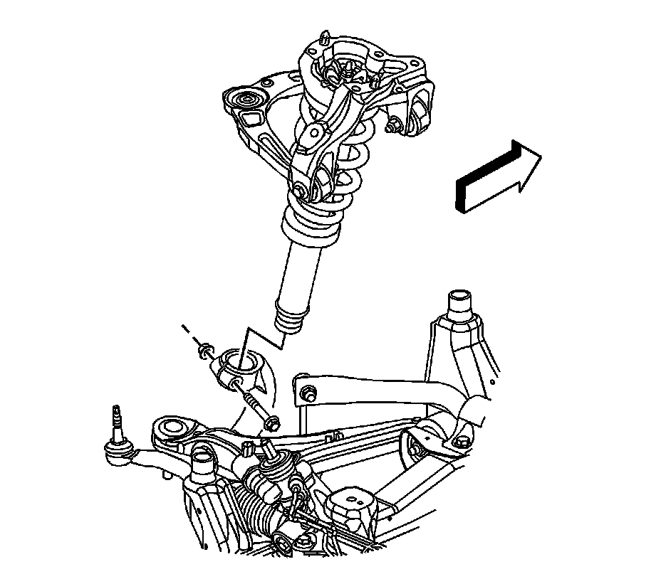
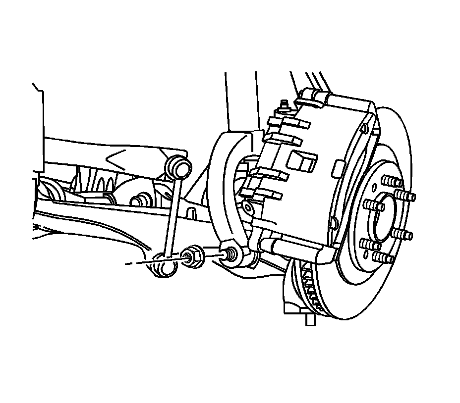
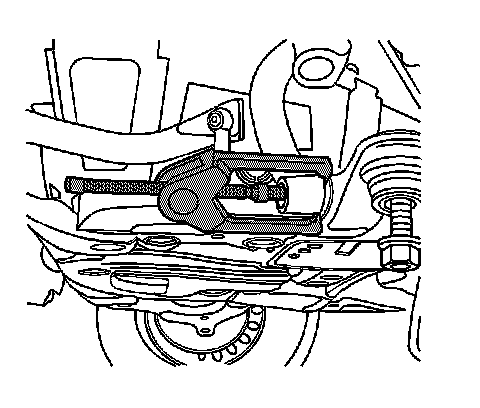
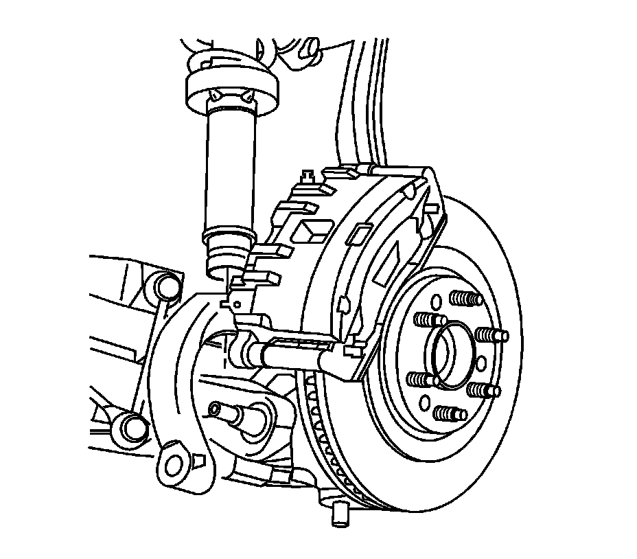

Shock Module Yoke Replacement
Shock Module Yoke Replacement
Tools Required
J 24319-B Steering Linkage and Tie Rod Puller
Removal Procedure

1. Raise and support the vehicle. Refer to Lifting and Jacking the Vehicle (Service and Repair) .
2. Remove the tire and wheel. Refer to Tire and Wheel Removal and Installation (Service and Repair) .
3. Remove the shock to yoke retaining nut.
4. Remove the shock to yoke retaining bolt by pulling up slightly on the lower control arm to remove the pressure on the bolt.

5. Remove the yoke to lower control arm retaining nut.

6. Using the J 24319-B , separate the yoke from the lower control arm.

7. Remove the yoke from the vehicle.
Installation Procedure
1. Install the yoke to the vehicle.
Important: Do not tighten the nut at this time.
2. Install the yoke to lower control arm retaining nut.
3. Install the yoke to the shock.
Notice: Refer to Fastener Notice (Fastener Notice) .
4. Install the yoke to shock retaining bolt and nut.
* Tighten the shock to yoke nut to 110 N.m (81 lb ft).
* Tighten the yoke to lower control arm nut to 180 N.m (133 lb ft).
5. Install the tire and wheel. Refer to Tire and Wheel Removal and Installation (Service and Repair) .
6. Lower the vehicle.